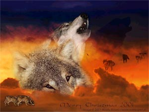

Monsters are the other creatures that
lurk the dark island other than us ShadowNight
wolves. These are listing a few. There are
many more monsters than are listed here,
some nice. Some that hate us wolves. These
are the most common:
Snake-Likes:
Poison Snalazar: (poy-son sna-la-zar)
Strength: MediumWeak/Medium
Elements: Poison
Good Against: Tiny, Water, Nature
Bad Against: Big, Fire, Rock
Desc: Dark green snake with small
brown legs, dark
brown spots all over.
Info: If you remember, Snalazar
is the
first monster that attacked you
before
Kuron saved you ^.^
Green Snalazar: (green sna-la-zar)
Strength: Weak/SlightlyStrong
Elements: Nature/Water
Good Against: Fire, Rock, Water
Bad Against: Nature, Big, Claw
Desc: Bright green snake with brighter
green legs.
Info: This is the Poison Snalazar's
relative. The Green
Snalazar lives in the forest rather
than the beach and just
love mice.
Red Serpinti: (red serp-in-tE)
Strength: MediumStrong/WeakStrong
Elements: Fire/Flight
Good Against: Rock, Ground, Nature
Bad Against: Water, Shock, Tiny
Desc: Red snake body with blood
red
demonic wings.
Info: The Serpinti are a Snake-like
winged
reptile. They are more closely
related to the
common Crocadile than the snake.
Shock Serpinti: (shock serp-in-tE)
Strength: VeryWeak/Strong
Elements: Shock/Flight
Good Against: Flight, Water, Nature
Bad Against: Rock, Ground, Big
Desc: Yellow-greenish body with
bright yellow
wings.
Info: Like the Red Serpinti. Becareful,
sometimes
these are weak. Other times, these
are strong.
Snaki: (sna-kE)
Strength: Weak/SlightlyStrong
Elements: Tiny
Good Against: Tiny, Nature, Rock
Bad Against: Big, Water, Fire
Desc: From green to black to brown
to yellow
to brown to blue. Common color
is bright green. Snaky.
Info: These are like the common
Snake, exept
with elements.
Ghosts:
White Wolf: (whIt wolf)
Strength: Strong
Elements: Light/Ghost
Good Against: Dark, Claw, Fighting
Bad Against: Fire, Water
Desc: Like pure white wolves on
white fire. Eyes of
either dark blue, dark brown, or
black.
Info: These are the ghosts of the
long lost
good wolves. They want they're
revenge! BEWARE!!!
Shadow: (sha-doe)
Strength: MediumStrong/WeakStrong
Elements: Dark/Ghost
Good Against: Claw, Fighting, Tiny
Bad Against: Light, Fire, Water
Desc: No real shape, just a shadow.
Mostly just
a shadow of a bloby thing.
Info: These are shadows. They can
be a shadow
of anything! If they become a wolve's
shadow, the wolf
might be under control.
Friendlies:
Dark Bird: (dark burd)
Strength: Weak
Elements: Flight
Good Against: Ground, Nature
Bad Against: Shock, Light, Claw,
Fighting
Desc: The size of a bluejay, but
dark black.
Info: ShadowNight Wolves give Dark
Birds food and
they give us warnings for upcoming
dangers.
Dingodo Dogs: (dEn-gO-dO dogs)
Strength: WeakMedium
Elements: Dark/Claw
Good Against: Flight, Nature, Fighting
Bad Against: Light, Fire, Water
Desc: Like a dingo with dark brown
spots all over.
Info: Dingodo Dogs help ShadowNight
Wolves
in hunting, fighting the bad, and
are just friends.
Cats:
Gwen: (gwen)
Strength: MediumStrong-Strong
Elements: Dark/(alot of others)
Good Against: Light, Fire, Claw,
Flight
Bad Against: Water, Nature
Desc: Like a cheeta. But where
it is yellow it is black,
and where a cheeta is brown it
is red,
Info: The only thing worse than
a Gwen is a Gwen
Leader. All Gwens are arch enemies
of ShadowNight Wolves.
Gwen Leader: (gwen lead-er)
Strength: Very Strong
Elements: Dark/(alot of others)
Good Against: Light, Fire, Claw,
Flight, Fighting, Rock
Bad Against: Water, Nature.
Desc: Same as Gwens, exept with
many markings on face. Always
a feather to show their leadership.
Info: Few are on this island, usally
around other Gwens. Beware of these,
even Kuron would have some problem
with these >.<
Kratin: (crat-in)
Strength: MediumWeak/MediumStrong
Elements: Flight/Claw
Good Against: Nature, Water, Ground
Bad Against: Tiny, Fire, Rock,
Shock
Desc: Like a black panther, but
with different
colored wings,
Info: Urmm... Not much to say.
Frawks
Blood Frawk: (blood frahk)
Strength: Strong/VeryStrong
Elements: Flight/Fire
Good Against: Nature, Claw, Tiny,
Fighting
Bad Against: Shock, Water, Big
Desc: A giant hawk with 7 foot
wing spand. Red,
brown, or black wings with a red
and brown body.
Info: The strongest of the Fawks.
Becareful, Blood Fawks
like a surprise airial attack.
Ocean Frawk: (osh-en frahk)
Strength: Medium/MediumHigh
Elements: Water/Flight
Good Against: Fire, Tiny, Claw,
Rock
Bad Against: Big, Nature, Ground
VERY BAD WITH SHOCK
Desc: Slightly smaller than the
Blood Frawk, only 5 foot
wing spand. Usually sky blue or
ocean blue with brown or
white spots. Some have been seen
that are black or purple.
Info: Slightly smaller and less
stronger than the Blood
Frawk,
the Ocean Frawk likes to soar above the sea. It
does not go into a battle right
away though.
Sun Frawk: (sun frahk)
Strength: HighWeak-MediumLow
Elements: Flight
Good Against: Tiny, Water, Ground,
Fighting
Bad Against: Big, Shock, Rock,
Claw, Nature
Desc: Much smaller than the other
frawks, the Sun Frawk
only has a wing spand of 3 feet.
It is usually a bright blue,
white, or gray.
Info: The Sun Frawk rarly likes
to battle. It only fights for
food or it's life.
Cave Frawk: (cAv frahk)
Strength: Medium
Elements: Dark/Flight
Good Against: Ground, Dark, Claw,
Tiny
Bad Against: Light, Big, Shock
Desc: 5 foot wingspand and razor
sharp talons. Always
either black, light gray, dark
gray, gray, or other dark colors.
Info: Lives in Caves. Very weak
when tooken out into
the sunlight. Use that to your
advantige ^.^
Mountain Frawk: (moun-tan frahk)
Strength: Medium/MediumHigh
Elements: Flight/Nature
Good Against: Ground, Rock, Claw,
Water
Bad Against: Shock, Fire, Big
Desc: 6 foot wingspand and grabbing
talons. Many
colors, common color is brown or
red.
Info: Lives in the high mountains
of this island. Like
surprise attacks like the Ocrean
Frawk.
Common Frawk: (cahm-men frahk)
Strength: Weak/WeakHigh
Elements: Flight
Good Against: Rock, Claw, Ground
Bad Against: Big, Tiny, Shock
Desc: Same size and same color
as a regular Hawk. Only
difference is a golden feather
on head.
Info: The most common and weakest
Frawk. Fround everywhere.
Birds:
Redjay: (red-jay)
Strength: HighWeak-MediumWeak
Elements: Flight/Fire
Good Against: Nature, Ground, Rock,
Claw
Bad Against: Shock, Water, Big
Desc: Same size and shape as a
bluejay. Exept red
and has slightly larger wings.
Info: Very Common
Dark Humming Bird: (dark hum-ming
burd)
Strength: Weak
Elements: Dark/Flight
Good Against: Tiny, Claw, Ground,
Rock
Bad Against: Light, Shock, Nature,
Fire, Water
Desc: Three times as big as a normal
humming bird, but
almost same desc. Black, light
gray, dark gray, or gray everywhere.
Info: Not much to say, exept they
are common.
Dragon Eagle: (dra-gon E-gle)
Strength: Strong
Elements: Flight/Fire
Good Against: Nature, Claw, Rock,
Ground
Bad Against: Water, Shock
Desc: Like an eagle, but nothing
like a dragon. Red,
brown, black, or whitish are the
colors.
Info: Very rare, estamated 20 on
island.
Renakamesa Necandase Bird, AKA Renaka
Bird: (ren-a-ka-mes-a ne-can-da-se, ren-a-ka burd)
Strength: All of them, BECARFUL
Elements: Flight/(other)
Good Against: Nothing
Bad Against: Nothing
Desc: Different sizes, same color.
That color is a deep red and brown.
Info: A very unknown and confusing
bird ((look at the name o.O)). Beware,
they can be the strongest monster
or the weakest. Even Kuron hates these.
Good thing... they are very very
very very very very very rare.